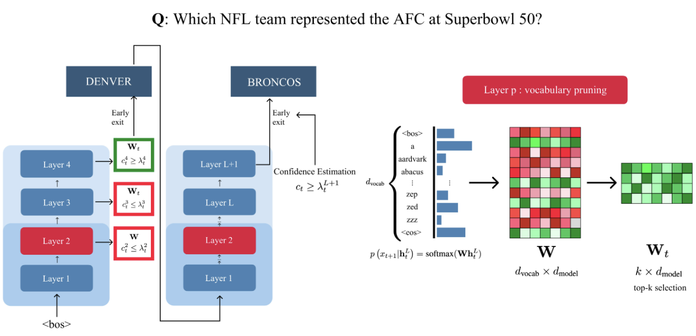
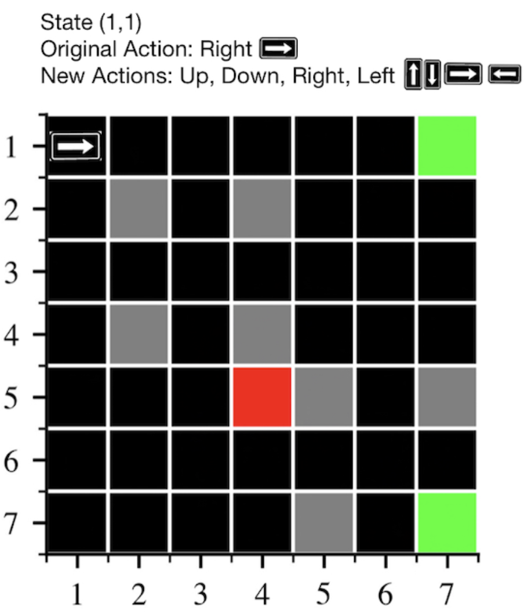

Publications
2025

Mitigating Goal Misgeneralization via Minimax Regret
RLC 2025
TL;DR: We use minimax regret to train RL agents that are robust to goal misgeneralization.
Safe generalization in reinforcement learning requires not only that a learned policy acts capably in new situations, but also that it uses its capabilities towards the pursuit of the designer's intended goal. The latter requirement may fail when a proxy goal incentivizes similar behavior to the intended goal within the training environment, but not in novel deployment environments. This creates the risk that policies will behave as if in pursuit of the proxy goal, rather than the intended goal, in deployment—a phenomenon known as goal misgeneralization. In this paper, we formalize this problem setting in order to theoretically study the possibility of goal misgeneralization under different training objectives. We show that goal misgeneralization is possible under approximate optimization of the maximum expected value (MEV) objective, but not the minimax expected regret (MMER) objective. We then empirically show that the standard MEV-based training method of domain randomization exhibits goal misgeneralization in procedurally-generated grid-world environments, whereas current regret-based unsupervised environment design (UED) methods are more robust to goal misgeneralization (though they don't find MMER policies in all cases). Our findings suggest that minimax expected regret is a promising approach to mitigating goal misgeneralization.
2024

Dynamic Vocabulary Pruning in Early-Exit LLMs
ENLSP Workshop, NeurIPS 2024
TL;DR: We propose dynamic vocabulary pruning to accelerate early-exit LLMs while maintaining performance.
Increasing the size of large language models (LLMs) has been shown to lead to better performance. However, this comes at the cost of slower and more expensive inference. Early-exiting is a promising approach for improving the efficiency of LLM inference by enabling next token prediction at intermediate layers. Yet, the large vocabulary size in modern LLMs makes the confidence estimation required for exit decisions computationally expensive, diminishing the efficiency gains. To address this, we propose dynamically pruning the vocabulary at test time for each token. Specifically, the vocabulary is pruned at one of the initial layers, and the smaller vocabulary is then used throughout the rest of the forward pass. Our experiments demonstrate that such post-hoc dynamic vocabulary pruning improves the efficiency of confidence estimation in early-exit LLMs while maintaining competitive performance.

Algorithms for Caching and MTS with reduced number of predictions
ICLR 2024
TL;DR: We design online algorithms that achieve optimal consistency-robustness tradeoffs using only a reduced number of predictions.
ML-augmented algorithms utilize predictions to achieve performance beyond their worst-case bounds. Producing these predictions might be a costly operation – this motivated Im et al. (2022) to introduce the study of algorithms which use predictions parsimoniously. We design parsimonious algorithms for caching and MTS with action predictions, proposed by Antoniadis et al. (2023), focusing on the parameters of consistency (performance with perfect predictions) and smoothness (dependence of their performance on the prediction error). Our algorithm for caching is 1-consistent, robust, and its smoothness deteriorates with the decreasing number of available predictions. We propose an algorithm for general MTS whose consistency and smoothness both scale linearly with the decreasing number of predictions. Without the restriction on the number of available predictions, both algorithms match the earlier guarantees achieved by Antoniadis et al. (2023).

'Explaining RL Decisions with Trajectories': A Reproducibility Study
TMLR 2024
TL;DR: We reproduce and extend a method for explaining RL agent decisions using trajectory-based analysis.
This work investigates the reproducibility of the paper "Explaining RL decisions with trajectories" by Deshmukh et al. (2023). The original paper introduces a novel approach in explainable reinforcement learning based on the attribution decisions of an agent to specific clusters of trajectories encountered during training. We verify the main claims from the paper, which state that (i) training on less trajectories induces a lower initial state value, (ii) trajectories in a cluster present similar high-level patterns, (iii) distant trajectories influence the decision of an agent, and (iv) humans correctly identify the attributed trajectories to the decision of the agent. We recover the environments used by the authors based on the partial original code they provided for one of the environments (Grid-World), and implemented the remaining from scratch (Seaquest and HalfCheetah, Breakout, Q*Bert). While we confirm that (i), (ii), and (iii) partially hold, we extend on the largely qualitative experiments from the authors by introducing a quantitative metric to further support (iii), and new experiments and visual results for (i). Moreover, we investigate the use of different clustering algorithms and encoder architectures to further support (ii). We could not support (iv), given the limited extent of the original experiments. We conclude that, while some of the claims can be supported, further investigations and experiments could be of interest. We recognize the novelty of the work from the authors and hope that our work paves the way for clearer and more transparent approaches.